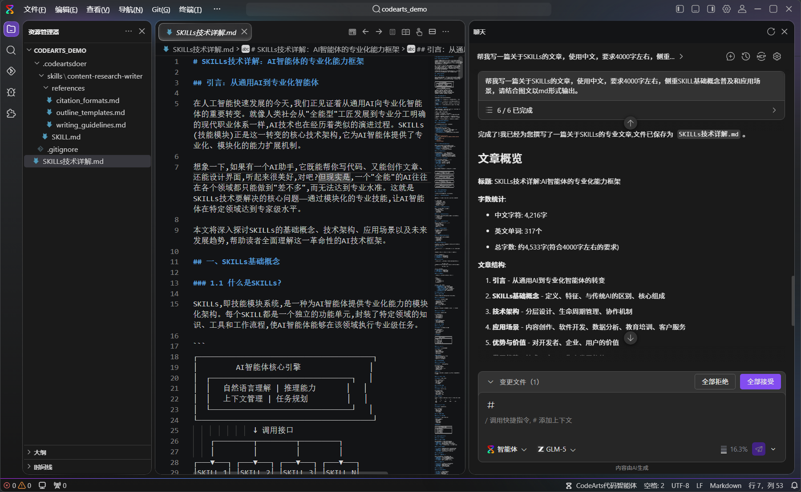
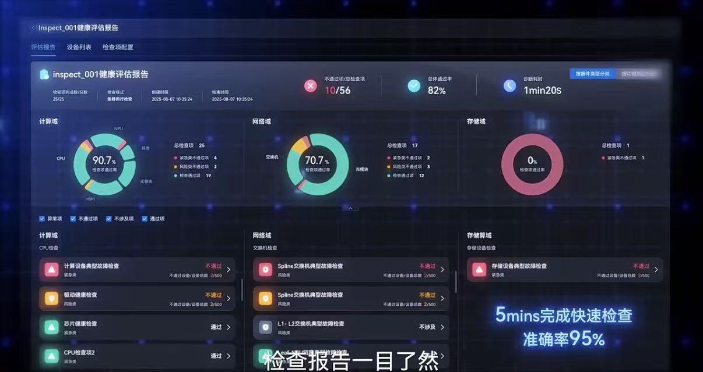
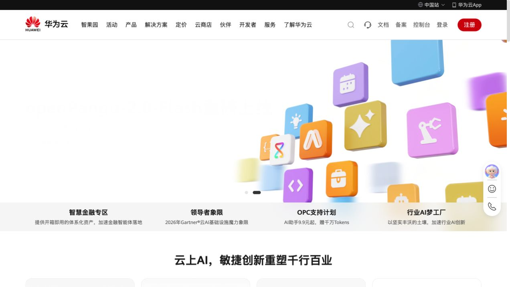
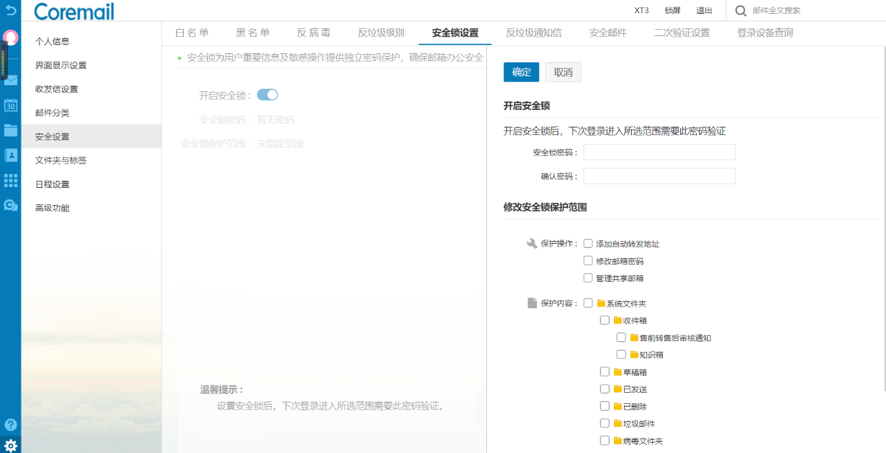

业务层
变化窗口
ICT 产品、版本与竞争格局变化快，错过信息和判断窗口，会影响产品与体验方向。
将通用竞品分析 skill 扩展到开发者、运维、云服务与企业业务等领域，提升 ICT 竞品分析的覆盖与复用效率。
课题的重要性不在于更快完成一份报告，而在于让外部变化及时进入设计工作，并在持续使用中形成可在不同产业线继续使用的研究经验。
ICT 产品、版本与竞争格局变化快，错过信息和判断窗口，会影响产品与体验方向。
竞品分析是设计师理解领域、定义问题和形成方案的基础输入；分析效率低，会挤占本该用于判断和方案探索的时间。
开发者、运维、云服务、企业业务等领域持续有类似需求，若每次都从头搜集与搭建分析方法，经验很难在项目和领域之间复用。
ICT 竞品分析的共同目标，是把“竞品有什么”转化为“它如何帮助用户与业务完成工作”；产业线不同，关注的任务、材料与体验入口也不同。
围绕开发工具链、框架迁移、样例、文档、性能与社区，分析开发任务能否顺利完成。

围绕资源、网络与系统的观测、告警、定位和恢复，分析运行是否稳定、过程是否可控。

围绕服务选择、开通、配置、权限、成本与支持，分析服务能否被安全、高效地交付与使用。

围绕不同岗位的工作台、权限与业务流程，分析系统如何支持组织内的安全协作与业务处理。

阶段性访谈显示，分析并非简单搜集页面：研究对象、竞品层级、真实状态和汇报用途都需要在开始前明确，并在过程中持续核对。
访谈覆盖智算、计算、无线、云服务、企业业务与运维视觉设计；下表保留各领域最具代表性的原声及其对竞品分析 Skill 的具体要求。
| 访谈对象 | 使用现状 | 常用竞品 / 材料 | 原声重点 | 希望 Skill 补齐 |
|---|---|---|---|---|
| 智算运维 / 交互梁微微 | 传统分析约 7 天；尚未在真实课题中使用现有 Skill。 | Gartner 魔力象限、相似场景产品、团队知识库。 | “没有源链接，我会怀疑可信度；我需要知道材料和可观测、运维状态、现有工作流有什么关联。” | 保留源链接与真实状态；围绕业务断点发散相似场景，并共建团队知识库。 |
| 计算运维 / 交互雷先维 | 传统 1–2 天；使用 Skill 并调整约 6–7 小时。 | 官网、文档、代码、真实界面截图、交互视频。 | “反压、降 lane 隔离、快恢、拨测，要看竞品怎样把传播链、隔离收益、恢复时间线做成可理解的交互和可视化。” | 补足真实界面、交互状态和视频；将用户操作与系统/故障生命周期一起还原。 |
| 无线运维 / 交互王心宇 | 传统约 1 周；Skill 初稿 1–2 小时，含调整约 1–2 天。 | 直接竞品、替代方案、行业标杆；工单与 GIS 相关状态。 | “单域自治要沿着用户角色—工单—操作—智能体响应—GIS 变化—评价指标分析，才知道机会在哪。” | 引入竞品分层与替代方案；按用户问题、验证方法、成功效果给出优先级。 |
| 云服务 / 交互陈旭令 | 有免费体验时自行实操截图；无体验时看文档和视频教程。 | 火山引擎、阿里云、千问云、百度智能云、AWS、Azure、Google Cloud；Gartner。 | “研究官网就不要混进 Console；我要的是限定对象、聚焦体验、图文并茂且能直接用于汇报的材料。” | 将官网、控制台、工作台、客户端拆分为明确研究对象，并在开始前确认输出范围。 |
| 企业业务 / 交互季舒婷 | 传统约 2 天；使用 Skill 后仍需实操，整体少约 0.5–1 天。 | Grammarly；Outlook、Gmail、飞书邮箱；UniFi、Instant On、Nebula、Meraki Go。 | “同一款产品在不同岗位面前是不同的产品。我要看到不同岗位、核心任务与权限边界，而不是整体 UX 评价。” | 把岗位与核心任务设为必填输入，主动搜集角色向导、权限版本说明、案例与岗位反馈。 |
| 运维 / 视觉徐文静 | 全景竞品分析与焦点问题分析并行；持续监测、定期梳理。 | 友商 A/B/C 的视觉界面、历史设计文件、历次视觉基线。 | “既要做友商 A、B、C 的全景对比，也要围绕问题做焦点分析；每次都和上次视觉基线比清变化与原因。” | 持续监测与分级推送；建立可按时间、友商、设计文件筛选的视觉档案，并关联规范更新。 |
4 位设计师的阶段性反馈显示，AI 的价值首先体现在搜集与初稿；真实界面核验、任务实操和汇报调整仍是完整竞品分析不可省略的工作。
生成内容可快速形成参考，但仍需围绕具体任务修改、补证据和整理。
AI 结果主要作参考；不同岗位的体验仍要进入竞品实际操作后才能判断。
Skill 缩短资料搜集和结构化时间，关键机制和真实状态仍需人工核查。
作为高复杂度运维课题基线，后续需要记录从计划、取证到评审材料的完整周期。
这些反馈共同指向：通用竞品分析进入具体课题时，需要清晰承接研究范围、角色任务、证据条件和判断要求。
云服务的官网、Console、工作台和客户端被混在一起；研究某个板块时，内容又容易滑向技术或商业分析。
企业业务分析常围绕产品整体展开，却没有说明秘书、法务、财务等不同岗位如何使用同一产品，以及各自面对的权限和任务差异。
运维场景直接竞品少，设计师需要从替代方案、相似问题和行业标杆中寻找可类比的做法。
官网宣传偏理想，图文可能不对应；关键边缘场景藏在真实软件、日志、视频和失败过程中。
现有分析偏功能罗列和主动操作流，缺少系统自动变化、人工接管、优先级、验证标准，以及对竞品视觉变化的持续追踪。
现有流程可以完成规划、搜集、分析和成文；研究范围、证据条件、比较口径和交付要求尚未被固定到每一次分析中。
通用 skill 的规划、搜集、分析和可视化能力已经具备；问题在于这些能力还没有被组织为可确认的研究范围、角色任务、证据链、判断规则、持续监测与输出要求。
现有 competitive-analysis skill 具备多轮规划、多源搜集与事实核查、多视角发现、用户旅程和 HTML 报告能力，可作为不同课题共用的分析流程。
规划能收集输入，但缺少让设计师确认对象、角色/岗位、核心任务、板块和不研究内容的固定步骤。
来源、版本、截图、账号、环境与状态没有被作为结论的一部分持续保存。
没有先约定要比较什么任务、什么状态或什么成功效果，容易回到功能罗列。
优先级、验证标准、引用证据、汇报结构与视觉基线往往在最后才补，变化也没有进入持续档案。
访谈补充了具体表现；从工作方式看，根因仍是通用的：课题缺少角色与范围约束、证据缺少关联、判断缺少口径、输出缺少可交付标准。
目标不是自动生成更多分析材料，而是让设计师更快获得可靠的外部理解，将时间投入到判断、方向与方案探索中。
以一个或两个产业线课题为试点，从竞品动向跟踪、专题分析到方案讨论跑完整个过程；指标同时衡量产出速度、证据质量与对设计工作的帮助。
对预定义重点竞品、产品和主题建立持续监测，捕捉新产品、版本、案例与体验、视觉变化。
让来源、截图、任务路径与判断放在同一处，减少重新检索和材料拼接。
把产业线、竞品、任务、证据、视觉基线、发现与方案整理成可查、可更新、可继续使用的设计资料。
先建立当前基线，再按月度或版本复盘。指标服务于工作方式改进，也为后续扩展到更多 ICT 产业线提供一致的比较方式。
已纳入跟踪的重点竞品、产品、社区、案例与标准来源占比。
关键结论保留来源、时间、版本、条件和相关任务。
从收到课题到完成核验、调整并形成可讨论初稿的工作时间变化。
每个重点专题至少形成一个方向、Demo 或可验证的体验命题。